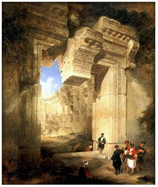

Bava Batra 4 - King Herod Rebuilds the Temple
King Herod feared that the Sages might question his fitness to be a king, leading to a rebellion, and killed all of them, leaving Bava ben Buta, whom he blinded. He then pretended to be a commoner and came to test Bava ben Buta.
H. See, master, what this wicked slave is doing? B. What shall I do to him? H. Curse him. B. " Even in your thoughts do not curse a king ..." H. But this man is not a king. B. "... even in your bedroom do not curse the rich ...", and "... a prince among your people you shall not curse ." H. If I knew that Sages were so circumspect, I would not have killed them. What is my remedy? B. Rebuild the Temple.
And so King Herod started.